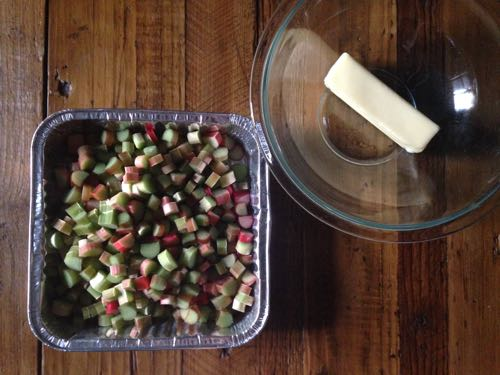

Rhubarb Crisp

Moving back to the time zone and four-season weather that I grew up in has had its ups and downs. Some downs are winter in its entirety and the lack of a variety of fresh food—instead, food comes in a variety of packaging. Some ups have been the daffodil, tulip and iris bulbs blooming in spring, the scent of lilac bushes (briefly) and rhubarb. Both my grandmas made rhubarb, in crisps, in pies and boiled as a side to dinner, and so did my parents, my mom when we were kids, and my dad now. I associate rhubarb with the promise of summer and the spring lushness of green grass under blue skies traversed by fluffy white clouds.
The rhubarb I ate most often as a kid grew alongside the old garage. Its long stalks and large leaves returned among the weeds year after year though no one had ever planted it. Perhaps Milan and Treeva had put it there, the couple who lived in our farmhouse before we did. And so I also associate rhubarb with untended tradition and dependability. As a kid, rhubarb was never my favorite thing to eat, but I liked it, especially when the crisp came out of the oven and was served still warm with a round of vanilla ice cream that quickly melted and mixed with the pink juice of the fruit (or is it a vegetable?). As an adult, I came across it once at my corner market in Celio, in Rome, and bought two stalks. It was pale and tasted okay, imported from northern Europe probably, but nothing like I remember.
And so I was pleased to find bundles of rhubarb stacked at my local NYC farmer’s market with the pink ends pointing to the sidewalk and all the green ends facing the street. It appeared at the market on the weekend after I finished my final exams, which actually made attempting to cook with it possible. Since then I have made rhubarb crisp after rhubarb crisp, eating it for breakfast and after lunch and dinner. It has returned my hope that fresh, good food exists in New York City, food that does not involve an air-conditioned supermarket or layers of plastic (though it does involve quite a bit of cash). It has also helped me to appreciate this overwhelming city I am living in. This city too is made up of the familiar rhythms: soon, almost like that, the season will be over and something else will take the rhubarb’s place.
Here’s how I make rhubarb crisp (recipe from my dad):
- 1 cup oats
- 1 cup flour
- 1 cup light brown sugar
- 1/2 cup butter, room temperature
Mix together (I like to use my hands). Overturn it on top of the chopped rhubarb (in a 9×9 dish), put some tin foil over it, and bake for about 30 to 35 minutes at 350 to 370 F.
· · · · · · · · · · · · · · · · · · · ·